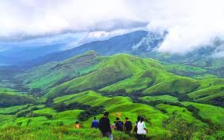
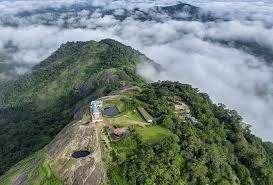
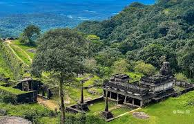

Kodchadri is known for its breathtaking views and religious significance. It's a must-visit for nature lovers and trekking enthusiasts.

Kundadri Hills offers scenic views of the Western Ghats, ideal for nature walks and adventure seekers.

Kavaladurga Fort is a historical fort offering both a challenging trek and a glimpse into the region's rich heritage.